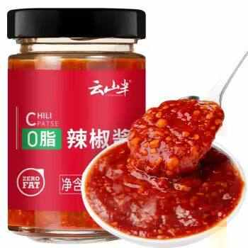

减肥超12 个月，说说那些一直在复购且无法割舍的小零食……
约斯特普通
2024-06-20
虽然说是去年五一后就正式开始减肥，但是在吃上面真的没有亏待过自己，在零食上即使踩了一些坑但吃完依然是开心，这就可以啦，不能既要又要，觉得吃多就多动动。
在减脂的初期，想要快速养成良好的饮食习惯，每一餐适当的减少摄入，这些小零食可谓是功不可没， 废话不多说，直接开始推荐 ：
1. 酒鬼花生 脱油花生（20g/包）

① 优点：小包装吃不多，香脆爽口，适合用于解馋 ② 推荐度： ⭐️ ⭐️ ⭐️
2. 云山半 0脂辣椒酱（250g/ 瓶）

① 优点：热量低，辣度适中，每天吃都行 ② 推荐度： ⭐️ ⭐️ ⭐️ ⭐️
3. 田园猎手alife鸡胸肉干（100g/ 包）
① 优点：热量低，调味好，软硬适中 ② 推荐度： ⭐️ ⭐️ ⭐️ ⭐️
4. 京东京造 黑芝麻丸无糖（108g/盒）
① 优点：无糖且营养丰富，饿了来一口 ② 推荐度： ⭐️ ⭐️ ⭐️
5. 三只松鼠智利西梅干（400g/袋）
① 优点：甜度适中，利于消化，适合饭后服用 ② 推荐度： ⭐️ ⭐️ ⭐️
6. OarmiLk吾岛无蔗糖希腊酸奶（100g/杯）
① 优点：奶味足，蛋白质含量高，可每天摄入 ② 推荐度： ⭐️ ⭐️ ⭐️ ⭐️
7. （One's Member）手撕风干牛肉干原味（400g/ 袋）
① 优点：蛋白质含量高，耐嚼，咸淡适中 ② 推荐度： ⭐️ ⭐️ ⭐️ ⭐️ ⭐️
8. 迷你可爱多甜筒 香草巧克力口味冰淇淋（ 20g*10支 ）
① 优点：虽然小但能解馋，且甜度适中，好吃不腻 ② 推荐度： ⭐️ ⭐️ ⭐️ ⭐️
9. 沂蒙公社山楂组合（山楂条+山楂球+山楂卷+山楂汉堡）共1060g
① 优点：0 添加的山楂根本无法拒绝，更何况成分干净 ② 推荐度： ⭐️ ⭐️ ⭐️ ⭐️
10. 中粮香雪纽约芝士蛋糕（85g/个）
① 优点：成分干净，味道好，适合每周来一块 ② 推荐度： ⭐️ ⭐️ ⭐️ ⭐️ ⭐️
以上并不是全部，今天分享的大多都是在京东买的，还有在淘宝买的，还有在抖音买的，后面也一点点发出来，供大家参考。